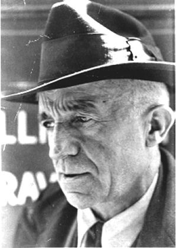

|

"The future will be different if we make the present different." - Peter Maurin This section is devoted to the life and thought of Peter Maurin who co-founded The Catholic Worker Movement with Dorothy Day in 1933. |
Peter's Program
|